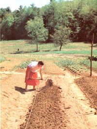
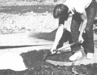
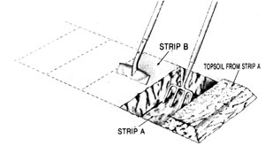
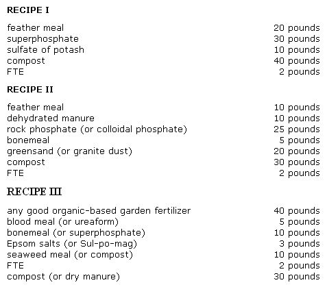

Just as a good singer, no matter how experienced, continues to practice the scales, so a good gardener should give thought again and again to the fundamental principles.
It wasn't that long ago that farmers were called sodbusters-a term derogatory to people who worked with the soil. Today, however, more and more men and women seem to be eager to get out and bust some very special bits of sod-their home gardens.
At MOTHER's Eco-Village, we look forward to that moment in spring when the soil has warmed and dried enough to allow digging to begin. From then on until early summer, our backs will bend and our sweat will flow as the earth beneath us is lifted, tilthed, and reawakened to its full life.
This year, though, before beginning to break ground, let's pause for a few minutes and review the basic reasons and techniques for preparing the soil. This article will be of special interest to people with new gardens, but it should prove useful for experienced growers tending years-old plots, as well.
Let's begin, then, with the "root" word . . .
Usually, we think of garden cultivation in terms of plowing, tilling, digging, or hoeing-that is, simply turning and loosening the soil. This is accurate as far as it goes, but there's much more implied by the word cul tivation, and no doubt the farmers of old intended for these additional meanings to be understood when they chose this term to describe their practices.
If a teacher stands before a class and says, "In this school, we cultivate the characters of young men and women," that person is stating his or her intent to nurture, refine, and improve the students' basic natures. These meanings are equally applicable in the garden. The full intention of soil cultivation is to nurture and improve the ground so that crops will grow better. And just as the teacher who cultivates character must know what attributes he or she wants the students to gain, so must the gardener have a clear image of what he or she hopes to achieve by working the soil.
For the organic grower, that image has two central aspects: The soil should be loose, friable, and evenly textured . . . and the life it contains should be fully encouraged and nurtured.
It's said that the early Greeks began their transition to agriculture when they observed that plants grew particularly well in the loosened soil of a landslide. That was the example in nature that they tried to imitate with their digging and planting. (Nature also texturizes soil through the action of glaciers, frost, wind, earthworms, gophers, moles, the probing of deep-rooted plants, and so on.) Whatever model you follow with your own ground-disturbing activities, you'll be striving to loosen the soil to a good depth and create an even texture in its upper inches. Such cultivation-in the narrow sense of the word-performs several important functions:
It provides aeration. Roots need oxygen in order to carry on cell respiration and thus grow. Indeed, well-aerated soil may be almost half air space!
It provides drainage. Most garden plants don't like soggy soil. And the deeper the soil is dug, the better the drainage.
It provides easy root movement. In compacted soil, the roots must slowly pry their way down. This slows overall growth. In loosened soil, the roots can move freely to get the water and nutrients they need.
And it provides a good seedbed. The fine, even texture of the upper inches allows the soil to snugly cradle each seed and assures reliable germination.
Of course, you aren't likely to achieve such ideally textured soil in your first gardening season, but you can take a giant step toward that goal. Then again, you could also take a giant step backward . . . if you're not careful.
Many enthusiastic beginning gardeners rush outdoors and work their soil before it's ready. It takes some experience to know when the right time has come. The critical factor is soil moisture: If your plot is either too wet or too dry when you start to dig or till, you can cause serious damage that may take years to heal. (This is particularly true of clay soil; sandy soil is more forgiving.) Too wet ground may turn into large, hard clumps that are difficult to break, while overly dry soil may pulverize into such fine dust that it loses all its texture.
Our Eco-Village soil is predominantly clay. Therefore, it's very slow to warm and dry during our typically cool, wet springs. Certain sections, however, have a higher content of silt and sand. Because of the larger particle size of those ingredients, these beds dry more quickly. Hence, we use them for our early spring plantings of peas, fava beans, and spinach.
To tell if all or part of your soil is ready to work, pick up a clump in your hand and lightly roll it into a ball. Then either drop it or prod it with a finger. If the ball breaks easily into smaller sections, your soil is ready. If it's still rubbery or puttylike, wait for drier weather. On the other hand, if the clod is too dry (if it feels hard or crumbles easily into small, brittle fragments), water the ground thoroughly and check it again in another day or two.
You might also want to dig deeply into your garden to get a general sense of its current quality. Dark red or brown coloration is a sign of good drainage, while gray mixed with yellow or red means your plot's drainage is probably poor. Pale ground is subsoil: If that's all you've got, your soil-building work is cut out for you! Mottled soil may indicate that the water table sometimes rises near your plot's surface. And black-ah, black-soil is rich in organic matter.
If your ground's ready to work, first clear and remove the dead weeds and crop residue . . . and scythe or mow down any tall, live vegetation. You can then either rake this growth off and compost it or-while it's still green-turn it under. Note, however, that cellulose-rich plant matter requires nitrogen to break down, so if you till in the plant material, you'll also be temporarily reducing your soil's supply of that important nutrient. Wait a month after turning in green matter before you plant.
You can, of course, choose one of several ways to break the ground. If you have a small plot and a strong back, you can dig the whole area by hand. As another option, you can rent or buy a rotary tiller to work the plot. It may take a large number of passes with the machine's tines set at increasing depths, but eventually you should be able to finely break up the top four to eight inches of soil. (For help in choosing a tiller, turn to the buying guide on page 86.)
Then again, you may live in an area where you can pay a tractor owner to plow and disk your plot. Although the machine probably won't work the ground any deeper than a tiller would, it will do the job more quickly and easily. In fact, if you're preparing a large first -year garden on a plot with a thick layer of sod, you'll definitely be better off if you let a tractor do that initial ground breaking.
At the Eco-Village, we work our garden primarily with hand tools (although we have employed rotary tillers, a tractor, and even a draft horse in some areas), using a process called double-digging. This method, as many of you know, involves loosening the soil with a spade and garden fork to a depth of as much as 24 inches to better work in organic matter and to promote texture deep in the soil. (See the drawing on page 72.) The process demands a lot of hard work . . . but the results usually justify the effort. In fact, yields from double-dug beds can be four times as great as those from conventionally dug areas! If you want to learn more about the method, we heartily recommend reading John Jeavons' How to Grow More Vegetables , available at many bookstores and libraries or, for $8.95 plus $1.50 shipping and handling, from Mother's Bookshelf, 105 Stoney Mountain Rd., Hendersonville, NC 28791.
While a lot of factors can influence vour choice of ground-breaking technique, one element crucial to good soil texture is depth. . .1 rotary tiller or tractor will do a fine job of texturizing the top four to eight inches of your plot, but those machines won't touch anything beneath that. In fact, with repeated use they can actually compact that subsoil into hardpan.
Double-digging, obviously, loosens soil to the greatest depth . . . but it also takes the greatest amount of labor. For a "middle ground" alternative, divide your tilled garden into pathways and raised beds, and rake the loosened pathway earth onto the beds: That'll help increase the depth of texturized soil for your crops, no matter how you initially break the ground! (Our 1984 Eco-Village minigar-experiment-reported in our last issue showed that crop yields in either a doubledug or rotary-tilled raised-bed garden are superior to those in standard row culture gardens.)
So far we've covered mechanical and manual methods of soil conditioning. This loosening can be likened to an inhalation: The soil has fluffed and expanded as a chest does when the lungs are filled. But just as our lungs are not simply inert balloons but are alive with blood that moves and uses this air, so the life in the soil responds to the increased air flow, leading to fertility.
And the organisms that make up a living soil must be carefully nurtured. They form an intricate system that is by no means completely understood. According to one estimate, a single teaspoonful of fertile soil contains 4,000,000,000 bacteria, 40 to 100 meters of mold filament, 144,000,000 actinomycetes, and large quantities of algae and other microorganisms. All of these, along with the organic matter that sustains them, transform inert, mineral dirt into healthy, living soil..
Such life-forms are important for a number of reasons. Like some intestinal bacteria in animals, they digest nutrients and change them into a form that higher organisms (in this case, plants) are able to use. Also, by tying up nutrients in their bodies as they grow and then dying and releasing them, these organisms regulate the flow of food to the plants and create a sustained fertility. In addition, their excretions, sometimes called soil glue, bind earthen particles into small aggregates, helping to build a loose, friable soil.
These beneficial microorganisms will not live in a soil that is fertilized only with chemicals. They rely, instead, upon a steady sup ply of actively decomposing organic matter for their food and energy. (Note the word steady: Organic matter needs to be supplied on an on-going basis.)
And important as its role of supporting microorganisms is, organic matter does even more. It helps aerate the soil (aha, more texture building!), retains water through dry periods, holds nutrients that would otherwise be leached out by rains, and-unlike chemical fertilizers-releases these nutrients slowly as its decomposition proceeds.
At the Eco-Village, we spread one inch of fresh compost over the surface of every just dug bed and then work this material in with a fork so that it's dispersed through the upper four to six inches of the soil. That is our fundamental fertilization program. The compost will nurture the crop throughout the season and leave some residue for long-term soil improvement. (We do occasionally work in some bonemeal to provide extra phosphorus, and hardwood ashes for potash.)
When our compost production is high, we're able to add as much as two or three inches of the homemade amendment per bed to help build up the organic matter in the soil. Ideally, a garden will eventually have a standing ratio of at least 5% organic matter. (This can be difficult to achieve in sandy soils or in regions with very hot summers.)
There are, of course, other sources of organic matter for your soil. In many areas, you can gather leaf mold from municipal leaf dumps. This is an excellent, long-lasting source of organic "fiber." (Use only well-decomposed mold, not fresh leaves.) Well-aged manure is also effective. (If you can only get hold of fresh, "hot" manure, compost it a few months so it won't burn your plants.)
And you can raise your own organic matter by growing cover crops like rye, hairy vetch, or buckwheat and then composting or turning them under. (Remember to wait a month before planting after turning under green matter.)
Building up the life and organic matter in your soil is an ongoing, never-ending garden task. You'll want to work each year at "growing" good soil, just as you'll work at growing good crops. Eventually, you should be able to maintain your soil's health and fertility by doing little more than proper composting, crop rotation, and cover cropping.
However, because most soils have been mistreated in the past-through poor agricultural practices or by natural erosionthey need some initial "medicinal" help to reach a sustainable level of fertility.
Experienced farmers of old could look at the relative quantities of various weeds or the way crops were growing and diagnose their soils. (The late Peter Escher, a biodynamic agricultural consultant, once outlined a program for improving the soil at Eco-Village after simply tasting one of our carrots!) Such "living soil analyses" can be extremely accurate, since they reveal how the soil is actually functioning in relation to plant growth.
Of course, very few people today have such observational skills. Most of us must rely on chemical soil tests to gain some sense of our plots' strengths and weaknesses. You can buy a kit at a garden supply store or get a test done through your county extension service. (John Jeavons, author of How to Grow More Vegetables, thinks the La Motte kit Model STH4 is best. It's available for $104.38 plus shipping from La Motte Chemical Products, Box 329, Chestertown, MD 21620. La Motte sells a smaller kit for the home gardener for $25.30 plus shipping. Jeavons feels, though, that a large kit such as the STH4 is less likely to produce errors.) Don't rely completely on any test results-the accuracy of soil testing is a subject of much controversy-but do use them to identify glaring deficiencies you should address.
First, a spade-wide layer of topsoil is removed from Strip A. Next, after the lower layer of soil in that trench is loosened with a garden fork, topsoil from Strip B is shoveled into the ditch in Strip A, and the dirt in the lower level of Strip B is loosened. This process is repeated down the row to the end of the bed. Finally, the topsoil from Strip A is used to fill in the remaining ditch.
The first thing you should test for is pH, that indicator of acidity or alkalinity. Balanc ing your garden's pH is important, because a soil that's too acidic (a pH of 6.0 or lower) or too alkaline (a pH of 8.0 or higher) will tie up essential minerals in the earth, making them unavailable to your vegetables.
If your soil is too acidic, you'll need to add limestone or hardwood ashes to your gardenon the day you break ground-to increase the pH. Be sure, though, to use only agricultural-grade (not hydrated, or slaked) lime . . . and if you have a choice, opt for dolomitic limestone rather than calcic limestone, because of the former's more favorable magnesium content. To raise your soil's pH one full point, you'll need at least 3 pounds of finely ground limestone per 100 square feet . . . and the denser your soil is, the more limestone you'll have to add. (Very heavy clays sometimes need as much as 8 pounds per 100 square feet.) Alternatively, hardwood ashes-which are fasteracting-can be applied at roughly the same rate as lime. Actually, you might be wise to use a combination of ashes and limestone, to give your garden both an immediate and a sustained boost.
On the other hand, your garden may be alkaline-particularly if you live in the Southwest-in which case you'll need to reduce the pH. A one-inch layer of peat moss, worked into the earth when you till or dig your plot, should lower the rating a point. You can also use agricultural gypsum, at a rate of 2 pounds per 100 square feet, for the same purpose.
After checking your soil's pH, you'll next be interested in its nutritional balance. Of the 216 elements that most affect plant growth, all but three must come from the soil. (The exceptions are carbon, hydrogen, and oxygen, which are derived mainly from water and air.) And among the most important of those remaining, nitrogen, phosphorus, and potassium-the famous N, P, and K of commercial fertilizer formulas-are generally classified as major nutrients, while ten others are labeled minor, or trace, elements.
As most gardeners know, nitrogen is essential to plant growth and vigor. It's often considered the nutrient that most promotes leaf development. (How're your spinach crops?) An ongoing supply of good compost and other organic matter should take care of the nitrogen needs of a healthy garden. To supplement the nitrogen of a soil that already tests out very high in that element, Jeavons-again, in his eminently useful book How to Grow More
Vegetables-recommends either .75 pound of blood meal (14% N) . . . 1 pound of fish meal (10% N) . . . 2 pounds of cottonseed meal (8% N) . . . or .75 pound of hoof and horn meal (14% N) per 100 square feet of garden. For a garden rated medium in nitrogen, he triples this dosage. And he roughly quintuples the proportions for a plot ranked very low in the element. In case you'd like to try working out some substitutions of your own, feather meal contains 10 to 13% nitrogen, processed municipal sludge 4 to 5%, poultry manure 4 to 6%, and most animal manures 2 to 4%.
Phosphorus promotes cell division, root development, and-most notably-fruit growth. If your soil tests show a very low phosphorus content, or if last year your green crops exhibited a reddish purple coloration in their stems and leaf veins, or if your fruiting crops were leafy but unproductive (never did get any tomatoes, you say?), you may need to add this element to your soil. For soils already rated very high in phosphorus, Jeavons recommends either 1 pound of bonemeal (24 to 28% P) or 2 pounds finely ground phosphate rock (30% P, but slow-releasing). He doubles the dose for ground rated medium and triples it for plots rated very low. Colloidal phosphate (20% P) and single superphosphate (20% P) are other good-and relatively fast-acting-sources.
Also known as potash, potassium is vital for cell division and growth, helps plants form strong stems and fight off disease, and promotes root growth. (Have a problem with your root crops last year? Notice a lot of yellow-streaked leaves and spindly plants?) For plots with a very high potassium rating, Jeavons recommends 1 pound of kelp meal (3% K) . . . 2 pounds of greensand (7% K) . . . or 3 pounds of crushed granite (4% K). For soil rated medium in potash, he suggests 1 pound of kelp plus 1.33 pounds of greensand (or 2 pounds of crushed granite) . . . 3.33 pounds of greensand . . . or 5 pounds of crushed granite. And for very low-rated soil, he doubles all of the "medium" numbers except the kelp. (Because kelp meal contains some growth hormones, Jeavons feels you should never add more than a pound of it per 100 square feet per year.) Some other organic sources of potash are feldspar dust (5-15%0), wood ashes (8% and sulphate of potash-magnesia-or Sul-po-mag-(22%).
These micronutrients-boron, calcium, chlorine, copper, iron, magnesium, manganese, molybdenum, sulfur, and zinc-are necessary in smaller amounts than nitrogen, phosphorus, or potassium, but, like the spices in a good recipe, are no less important to the end result.
Not only are trace elements valuable as direct nutrients, but they also work as catalysts to prompt chemical reactions that dissolve other soilborne minerals, making them available to plants. Many of the ten micronutrients, in fact, work best only when present in proper proportion with others.
Good composting and other soil-building practices should provide a balanced meal of trace elements in the long run. If you want to give your plot a trace-element boost now-or periodically-seaweed (kelp) is an excellent source. Apply a pound of seaweed meal (or 3 pounds of raw seaweed) per 100 square feet of soil area. Another good, commercially available source is FTE (fritted trace elements).
You can buy or make balanced organic fertilizers to help boost your garden's soil quality. At the Eco-Village we've often used Erth-Rite fertilizer on poor soils. (It's available in different blends from Zook & Ranck, Rt. 1, Gap, PA 17527. A 40-pound bag of the basic garden formulation costs $7.98 plus shipping. Write the company for more information.)
John Jeavons has a general fertilizer program for first- and second-year gardens, assuming that the soil is poor and the owner hasn't-for one reason or another-done a soil test. His recipe, which follows, is meant to be applied per 100 square feet at each planting.
10 pounds cottonseed meal,
or 5 pounds fish meal, or 5 pounds
blood meal, or 4 pounds hoof and horn meal
4-5 pounds bonemeal, or 10 pounds
phosphate rock, or 10 pounds soft phosphate
1 pound kelp meal and 2 pounds
wood ashes, or 10 pounds crushed
granite, or 10 pounds greensand
2 cubic feet of manure
up to 1 cubic yard of compost
2 pounds eggshells
1 pound Clodbuster (a commercial product)
Lee Fryer also provides some good homemade fertilizer recipes in his book The Bio-Gardener's Bible (available from many bookstores and libraries, or for $9.95 plus $1.50 shipping and handling from Mother's Bookshelf, 105 Stoney Mountain Rd., Hendersonville, NC 28791). Below are three of Lee's formulas. Each makes about 100 pounds of fertilizer and provides at least 3% nitrogen, 6% phosphorus, and 6% potash. Lee recommends applying a total of 4 pounds of these mixtures per 100 square feet of garden per season (applied both throughout the garden and under seed rows prior to planting) if-in his words-"you want to grow a garden that'll impress the neighbors."
A good mail-order source for most of these supplements, in case you want to purchase some to remedy specific deficiencies or make your own fertilizer, is Necessary Trading Company, 328 Main St., New Castle, VA 24127.
Most of the steps we've focused on in this article are meant to be beginnings. True cultivation of your garden is a lifelong process . . . one we'll likely talk about in a future article. (EDITOR'S NOTE: Back-issue savers can refer to "Soil-Building Basics" on page 110 of MOTHER N0. 78 for more information on this topic.)
For now, we hope we've helped you get your garden off to a good start. Enjoy the season ahead, learn from your mistakes (don't get discouraged by them!), and be thankful for-and mindful of-the piece of earth you care for .
|
 First, a spade-wide layer of topsoil is removed from Strip A. Next, after the lower layer of soil in that trench is loosened with a garden fork, topsoil from Strip B is shoveled into the ditch in Strip A, and the dirt in the lower level of Strip B is loosened. This process is repeated down the row to the end of the bed. Finally, the topsoil from Strip A is used to fill in the remaining ditch. |
 |
 |
|
 |
|
|